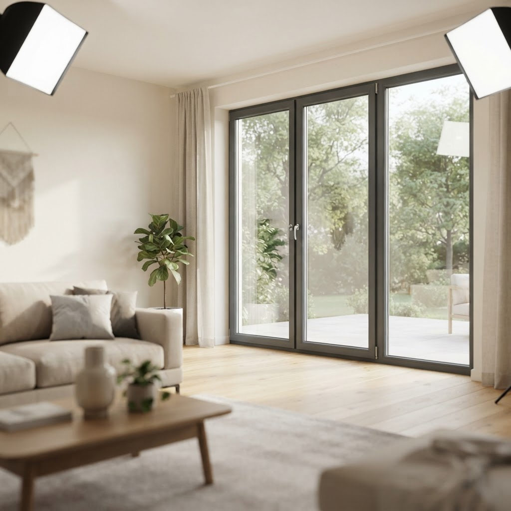
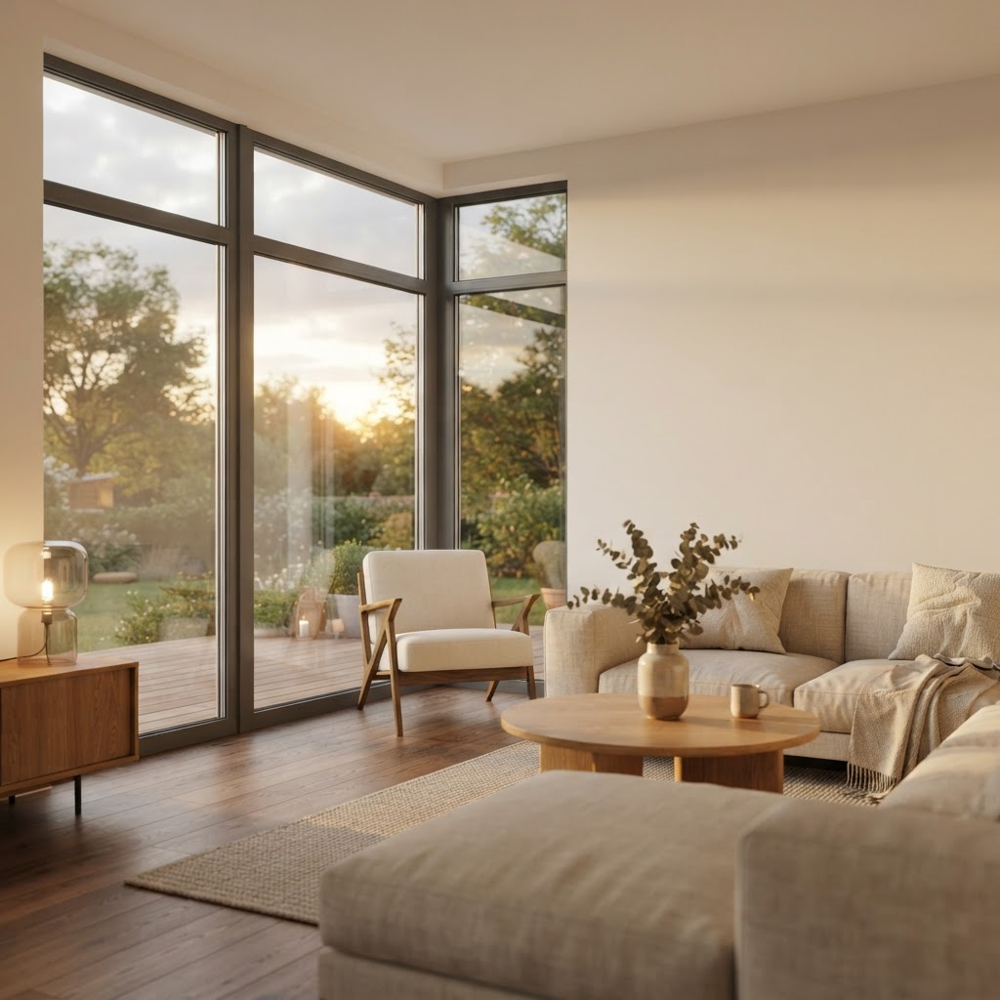
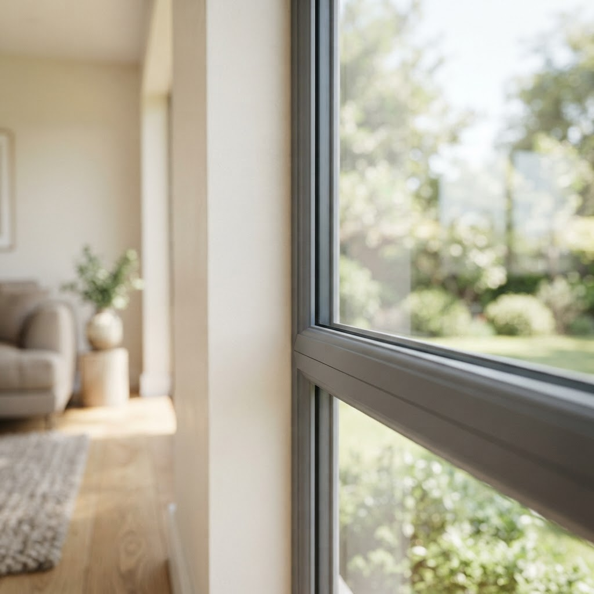
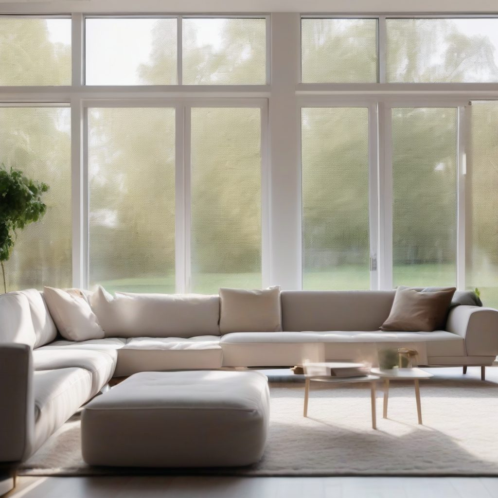

Нестеров и партнёры — Западный
Окна и балконы под ключ в Москве
Ставим и обслуживаем окна с 2014 года. Работаем своими силами: от замерщика до монтажников, без посредников и лишних наценок.
Контакты и время приёма
Принимаем заявки по телефону и в мессенджерах ежедневно с 9 до 21 по Москве. Замер согласуем на ближайшее удобное время, в том числе в выходные. Офис и цех в Москве, выезд по городу и ближнему Подмосковью.
Кто мы такие
Мы небольшая московская компания с двумя цехами и четырьмя бригадами. Ежегодно устанавливаем около 900 окон для частных жильцов и управляющих компаний.
Ответы на частые вопросы
Ставите ли вы окна зимой?
Да, работаем круглый год. Используем теплую технологию монтажа, поэтому квартира не выстужается, а шов не промерзает.
Можно ли менять окна поэтапно?
Конечно. Вы можете остеклить квартиру по одной комнате, оформляя на каждый этап отдельный замер и договор.
Бесплатный замер
Оставьте заявку, и мы приедем в удобное вам время, чтобы посчитать стоимость и зафиксировать её в договоре.
Оконный сервис в Москве4 статьи
Все статьи

Как заказать замена стеклопакета в пластиковом окне спб в Юго-Западном округеЖивете в Западном округе Москвы и столкнулись с треснувшим стеклом? Мы профессионально выполняем замену стеклопакета в пластиковом окне, работая во всех райо…
Комплектующие для пластиковых окон в Западном округе — что важно знатьЖивете в Западном округе Москвы и планируете ремонт? Мы помогаем жителям района подобрать надежные комплектующие для пластиковых окон, чтобы в квартире всегд…
Как заказать установка окон в Западном округеЗападный округ Москвы славится своими зелеными парками и комфортной инфраструктурой для жизни. Когда приходит время менять остекление, многие задумываются, к…
Как заказать замена стеклопакета в пластиковом окне в Юго-Западном округеДумаете, как заказать замену стеклопакета в пластиковом окне в Юго-Западном округе? В Западном районе Москвы это делаем качественно, быстро и без замены рамы.